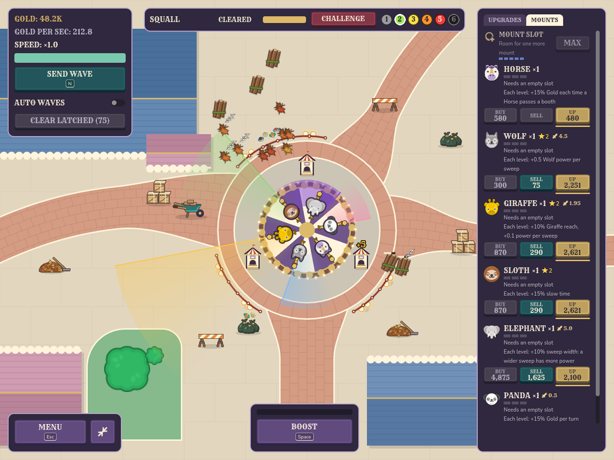

Your carousel does the work
Early on you're clicking debris away. Then a Wolf sweeps, a Giraffe reaches far out, a Sloth makes everything sleepy, an Elephant swats whatever gets close, and a Panda patches things up. Soon they're clearing the park without you.